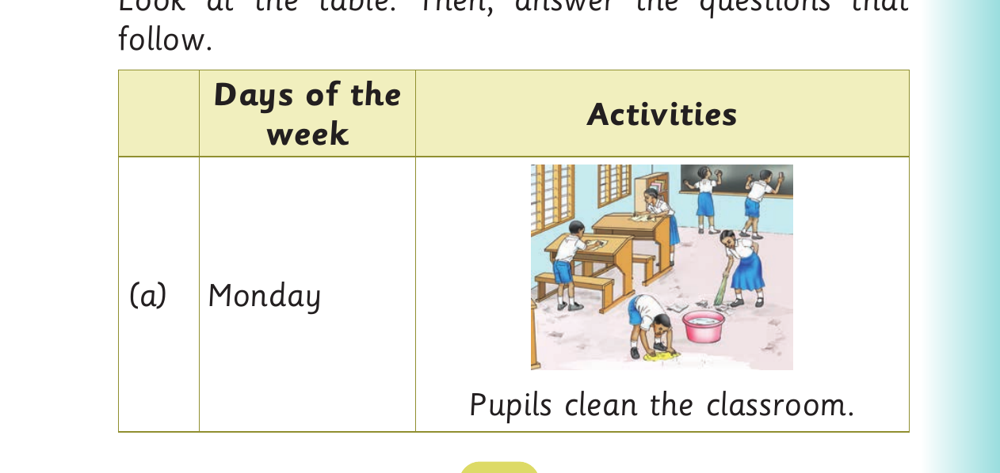

Days of the week - dialogue and activities
Activity 2
Act out the following dialogue:
John:Hi, Asha.
Asha:Hi, John.
John:Excuse me, do you know what is today?
Asha:Today is Monday.
John:What do you do every Monday after school?
Asha:I usually do my homework. And you?
John:I usually watch the news after school.
Asha:Did you go to school on Saturday and Sunday?
John:No, I did not go to school on those days.
Asha:What will you do on Saturday?
John:I will clean my room and play with friends. What about you?
Asha:I will attend a music class.
Activity 3
Study the table. Then, answer the questions that follow. Answer for question 1 is an example.

Weekly activity table. Monday. A picture of six pupils cleaning their classroom.